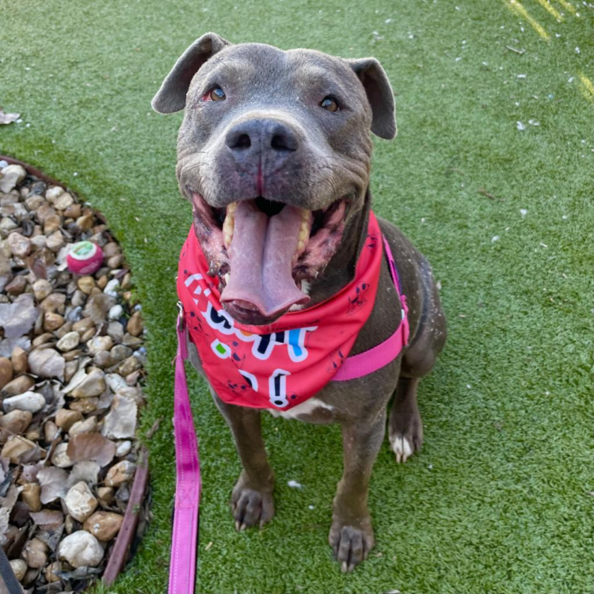

Wade
Wade is a resilient and affectionate dog who has spent over 1,400 days at Austin Pets Alive!, waiting for a family to call his own. Despite his extended stay, Wade remains hopeful and eager to find his forever home. He enjoys playing with toys, going for walks, and receiving belly rubs. Wade would thrive in a calm environment where he can be the only pet, allowing him to shower his new family with all the love he has to give. Find him at Austin Pets Alive